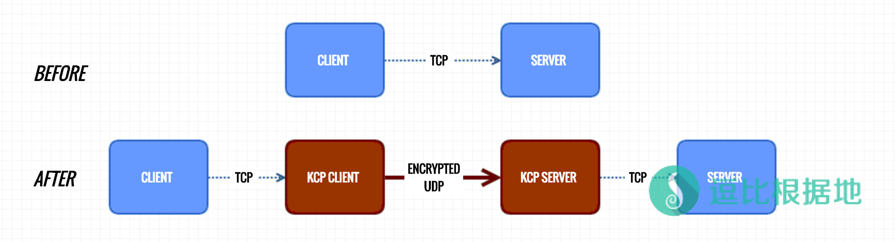

本来是不想写 KCPTun 的教程的，几个月前就发现这个软件了，也有人想让我写，但是我很讨厌Finalspeed和Netspeed，所以连带着KCPTun后也不喜欢。
但是最近发现很多软件都开始支持这玩意了，比如Shadowsocks安卓版、V2ray、一些路由器固件，再加上最近让我写这个软件的人也挺多，那我就干脆写了吧，反正最近没东西写挺无聊的。
本篇教程是 KCPTun 服务端的教程，客户端的请看：KCPTun 客户端教程 + 自写KcpTun Tools辅助工具 ，其他KCPTun教程 请看：这里
注意：此软件教程已经放弃更新，教程已失效，所以请勿继续使用。
KCPTun简介
Kcptun 是一个非常简单和快速的，基于 KCP 协议的 UDP 隧道，它可以将 TCP 流转换为 KCP+UDP 流。而 KCP 是一个快速可靠协议，能以比 TCP 浪费100%-200%的带宽的代价（理想状态下），换取平均延迟降低 30%-40%，且最大延迟降低三倍的传输效果。
Kcptun 是 KCP 协议的一个简单应用，可以用于任意 TCP 网络程序的传输承载，以提高网络流畅度，降低掉线情况。由于 Kcptun 使用 Go 语言编写，内存占用低（经测试，在64M内存服务器上稳定运行），而且适用于所有平台，甚至 Arm 平台。
Kcptun 工作示意图：

KCP 协议：https://github.com/skywind3000/kcp
Kcptun 项目地址：https://github.com/xtaci/kcptun
KCPTun安装
本教程使用的是 Debian 64x 系统。
下载KCPTun，并解压：
注意：下面的KCPTun文件下载可能不是最新的地址，最新文件的下载地址看这里：Github-kcptun-releases，直接替换第三行 wget 后面链接的版本号就行了。
注意：KCPTun不分系统版本，只分主系统和位数，比如 64x 就选择 kcptun-linux-amd64-XXX.tar.gz ，32x 就选择 kcptun-linux-386-XXX.tar.gz ，Centos/Debian/Ubuntu都一样。
mkdir /root/kcptun # 新建一个文件夹 cd /root/kcptun # 进入刚才新建的文件夹 wget https://github.com/xtaci/kcptun/releases/download/v20161222/kcptun-linux-amd64-20161222.tar.gz # 下载最新的 kcptun-linux-amd64 文件 tar -zxvf kcptun-linux-amd64-20161222.tar.gz # 解压刚才下载的文件
解压之后会发现只有两个文件： client_linux_amd64 和 server_linux_amd64，第一个是是客户端文件（linux的客户端），第二个是服务端文件。
目前KCPTun已经加入了配置文件设定，但没有任何启动脚本，所以需要新建一些脚本。
注：下面需要 vi 操作，不会的可以看这个 vi 教程：Linux中VIM编辑器的真 · 简单使用教程 ， 简单的说就是 vi XXX 打开文件，按 I键 进入编辑模式，然后输入内容后按 Esc键 退出编辑模式，然后按 :wq 保存并退出。
创建 start.sh：
vi /root/kcptun/start.sh
写入以下内容：
#!/bin/bash cd /root/kcptun/ ./server_linux_amd64 -c /root/kcptun/server-config.json 2>&1 & echo "Kcptun started."
server_linux_amd64 对应服务端文件名，请对应修改。
创建配置文件：
vi /root/kcptun/server-config.json
写入以下内容：
{
"listen": ":2333",
"target": "127.0.0.1:8388",
"key": "dou-bi.co",
"crypt": "aes-192",
"mode": "fast2",
"mtu": 1350,
"sndwnd": 1024,
"rcvwnd": 1024,
"datashard": 70,
"parityshard": 30,
"dscp": 46,
"nocomp": false,
"acknodelay": false,
"nodelay": 0,
"interval": 40,
"resend": 0,
"nc": 0,
"sockbuf": 4194304,
"keepalive": 10,
"log": "/root/kcptun/kcptun.log"
}
- listen 表示 Kcptun 的服务端监听端口，用于接收外部请求和发送数据，默认 2333；
- target 表示要加速的地址，由于 Kcptun 和 Shadowsocks 在同一服务器，地址填写 127.0.0.1（不需要改，这是指本机IP，除非你有多个IP），而 8388 为 Shadowsocks 服务端监听端口；
- key 是 Kcptun 的验证密钥，上面的启动脚本参数默认加上了
-key dou-bi.co，如果不需要可以删掉，服务端和本地必须一致才能通过验证，请自行设置； - mode 为加速模式，默认 fast2 ；
- crypt 为加密方式，默认 aes-192 ；
- nocomp 为压缩传输，默认 false 表示开启压缩传输。
其他参数可以参考项目主页的介绍。
下面是引用官方介绍：
响应速度：
fast3 > [fast2] > fast > normal > default
有效载荷比：
default > normal > fast > [fast2] > fast3
中间 mode 参数比较均衡，总之就是越快越浪费带宽，推荐模式 fast2。
其他参数，请使用 ./server_linux_amd64 -h 查看，更深层次的参数调整需要理解 KCP 协议，并通过“隐藏参数”调整。
作者推荐配置参数：
适用大部分ADSL接入（非对称上下行）的参数（实验环境电信100M ADSL）。 其它带宽请按比例调整，比如 50M ADSL，把 -sndwnd -rcvwnd 减掉一半。 SERVER: -mtu 1400 -sndwnd 2048 -rcvwnd 2048 -mode fast2 CLIENT: -mtu 1400 -sndwnd 256 -rcvwnd 2048 -mode fast2 -dscp 46
注意：客户端和服务端的参数
-sndwnd 2048 -rcvwnd 2048这两个值不要大于你的本地宽带，否则流量消耗会浪费好几倍，100M就是2048，50M就是1024。这两个值可以逐渐调小，但是不能比本地的实际宽带大！注意：产生大量重传时，一定是窗口偏大了
创建 stop.sh：
vi /root/kcptun/stop.sh
写入以下内容：
#!/bin/bash
PID=`ps -ef | grep server_linux_amd64 | grep -v grep | awk '{print $2}'`
if [ "" != "$PID" ]; then
echo "killing $PID"
kill -9 $PID
else
echo "Kcptun not running!"
fi
注意：这里的 server_linux_amd64 ，自行替换为你的 服务端名称，64位的系统就是示例的这个，如果是32位的则是 server_linux_386 。
创建 restart.sh：
vi /root/kcptun/restart.sh
写入以下内容：
#!/bin/bash cd /root/kcptun/ echo "Stopping Kcptun..." bash stop.sh bash start.sh echo "Kcptun started."
给上面创建的脚本添加执行权限：
chmod +x /root/kcptun/*.sh
启动服务端：
sh /root/kcptun/start.sh
日志文件在：/root/kcptun/kcptun.log
监听日志信息：
tail -f /root/kcptun/kcptun.log
停止服务端：
sh /root/kcptun/stop.sh
重启服务端：
sh /root/kcptun/restart.sh
添加开机启动：
Centos系统：
chmod +x /etc/rc.d/rc.local && echo "sh /root/kcptun/start.sh" >> /etc/rc.d/rc.local
Ubuntu/Debian系统：
chmod +x /etc/rc.local && echo "sh /root/kcptun/start.sh" >> /etc/rc.local
升级服务端
重复一开始的步骤，下载最新版本的压缩包然后解压覆盖源文件，记得先 停止KCPTUN运行再覆盖。
cd /root/kcptun # 进入新建的文件夹 wget https://github.com/xtaci/kcptun/releases/download/v20161222/kcptun-linux-amd64-20161222.tar.gz # 下载最新的 kcptun-linux-amd64 文件 tar -zxvf kcptun-linux-amd64-20161222.tar.gz # 解压刚才下载的文件
故障排除
- 客户端和服务器端皆无
stream opened信息。连接客户端程序的端口设置错误。
- 客户端有
stream opened信息，服务器端没有。连接服务器的端口设置错误，或者被防火墙拦截。
- 客户端服务器皆有
stream opened信息，但无法通信。上层软件的设定错误。
注意：日志信息在你的客户端或者服务端同目录下的 kcptun.log 中。
注意事项
KcpTun有个缺点，就是实际流量消耗 最少是 你使用量的两倍！如果参数调整有问题，可能会浪费十几倍的流量，而加速幅度也并不会上升多少。
作者的解释：
- 出现这个情况有几种可能：
- ISP 对UDP丢包极高，例如50%
- 服务器，客户端本身的带宽较低，可以适当调低sndwnd /rcvwnd
- 可以尝试 -dscp 46参数降低丢包率。
希望你们注意一下这个问题，可能搞不好就被 IDC 以滥用网络的名义给封VPS了。
本篇教程是 KCPTun 服务端的教程，客户端的请看： KCPTun 客户端教程 + 自写KcpTun Tools辅助工具，其他KCPTun教程 请看：这里
参考资料：https://github.com/xtaci/kcptun、https://blog.kuoruan.com/102.html
转载请超链接注明：逗比根据地 » Shadowsocks另一种双边加速软件 —— KCPTun（服务端教程）
责任声明：本站一切资源仅用作交流学习，请勿用作商业或违法行为！如造成任何后果，本站概不负责！


那你不会变通么，教程是死的人是活的啊。
没有什么升级指令，就是下载新版本然后解压覆盖源文件，记得关闭kcptun。